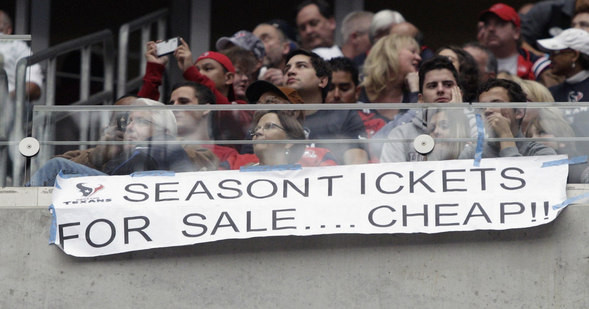

The Houston Texans have faced several challenges and shortcomings throughout their history. One significant area of struggle has been the inconsistency in quarterback performance. Despite having talented players at the position, the team has often grappled with quarterback transitions and the quest for a stable franchise quarterback. This instability has impacted offensive production and, at times, hindered the team's ability to make deep playoff runs. The Texans have experienced multiple changes in leadership, including coaching staff and front-office personnel, contributing to the team's difficulties in finding a sustained winning formula.
Another notable shortcoming for the Texans has been their defensive struggles in certain seasons. While the team has had standout defensive players, including J.J. Watt, maintaining a consistently dominant defense has been a challenge. Injuries to key defensive players and roster turnover have occasionally led to defensive lapses, affecting the team's overall competitiveness.
Off-field issues have also played a role in the Texans' challenges. Contract disputes, trade requests, and legal matters involving star players, most notably the situation with Deshaun Watson, have created distractions and uncertainties that impacted the team's focus and cohesion. These off-field challenges have contributed to a turbulent period for the franchise, impacting both performance on the field and the overall team environment.
For more details, click here to go to Page 3.